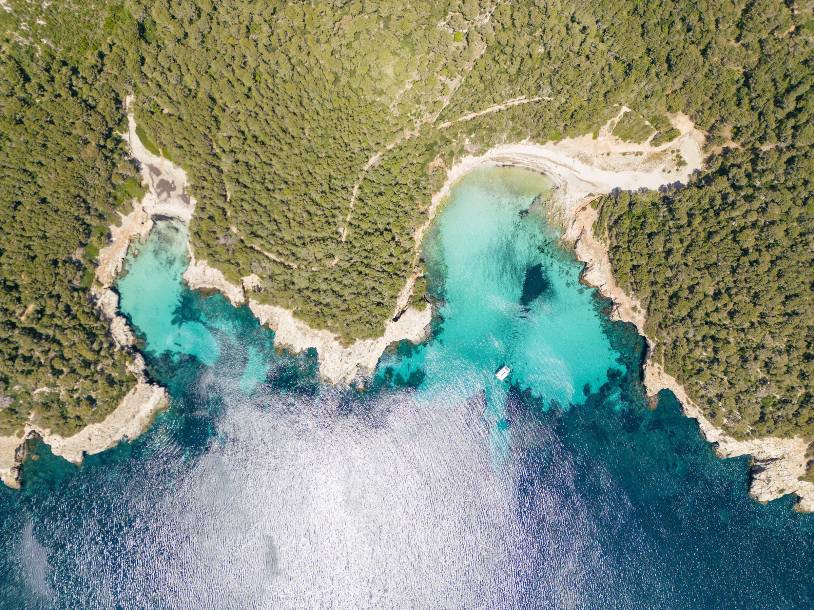
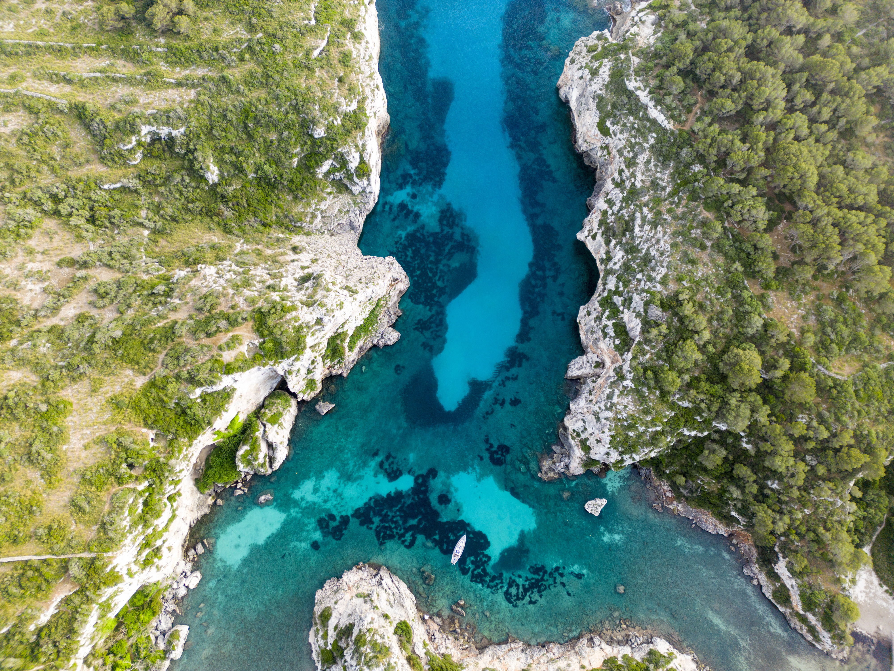
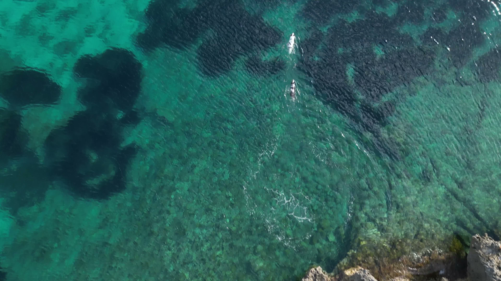
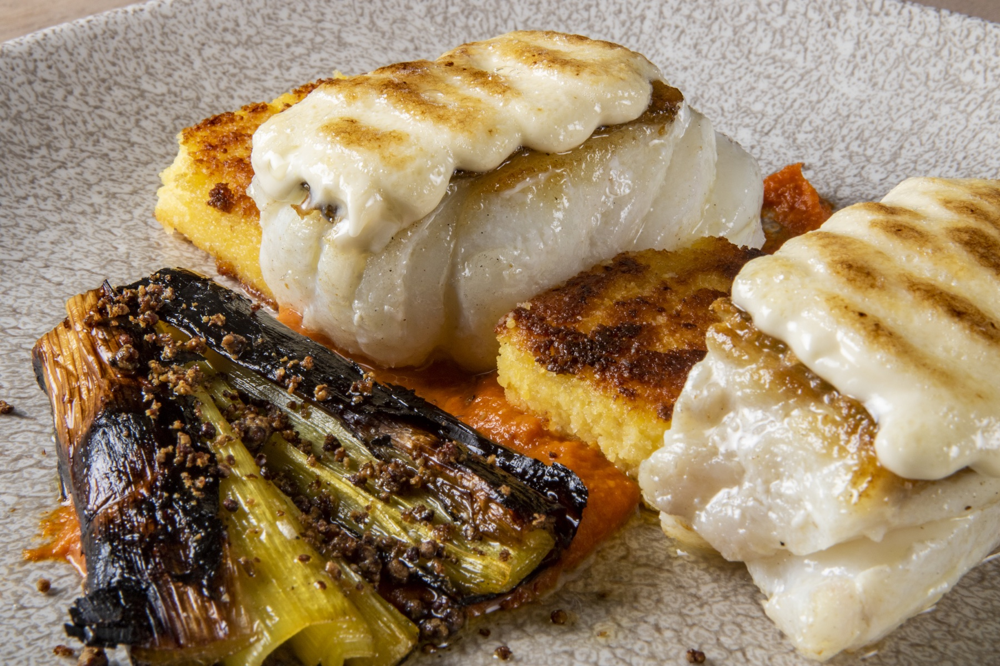

Costa y naturaleza
Paisajes, caminos y experiencias en el mar, fotografiados y filmados en los espacios que el municipio quiera poner en valor.
 SANTANYÍ PROPUESTA INDEPENDIENTE
SANTANYÍ PROPUESTA INDEPENDIENTE
UNA PROPUESTA DE JUAN AIZPURU · FITUR 2027
Fotografía y vídeo para mostrar las experiencias, los lugares y las personas que dan vida al municipio en cada estación.
Descubrir la propuestaLA OPORTUNIDAD
Santanyí quiere dar a conocer su oferta más allá del verano: rutas en bicicleta, senderismo, naturaleza, gastronomía y cultura. Mi propuesta es crear imágenes nuevas que ayuden a presentar esas experiencias en las temporadas que vuestro equipo quiera impulsar.
La producción se plantearía junto al área de turismo y colaboradores locales, con una mirada que respete los lugares y la vida de quienes viven allí.

UNA PRODUCCIÓN A MEDIDA
La selección de lugares, actividades y temporadas se definiría con vuestro equipo.

Paisajes, caminos y experiencias en el mar, fotografiados y filmados en los espacios que el municipio quiera poner en valor.

Cicloturismo y senderismo conectados con pueblos, oficios y encuentros con personas del territorio.

Productores, cocina, mercados y propuestas culturales que invitan a descubrir el municipio en distintas épocas.
Imágenes del archivo de Juan Aizpuru, utilizadas como referencia visual. La producción propuesta se realizaría en Santanyí.

¿QUÉ PODEMOS CREAR?
Fotografía y vídeo nuevos para web, materiales de promoción y campañas. Vuestro equipo puede trabajar con el material final o podemos crear y producir la campaña juntos.
Definiremos las temporadas, los lugares, el tiempo de producción, los materiales y la licencia de uso según vuestras necesidades.
SOBRE MÍ
Soy Juan Aizpuru, fotógrafo y realizador. Trabajo con un equipo profesional creando imágenes de viajes, naturaleza, gastronomía y personas. Ya he fotografiado en Baleares, incluido trabajo aéreo, y me gustaría volver para producir un proyecto específico para Santanyí.
Me interesa colaborar con guías y profesionales locales para conocer mejor cada lugar y reflejar las experiencias que queráis comunicar.
Ver mi trabajoHABLEMOS EN FITUR
Me gustaría conocer vuestras prioridades de promoción y explorar una colaboración adaptada a vuestro equipo.
Contactar con Juan